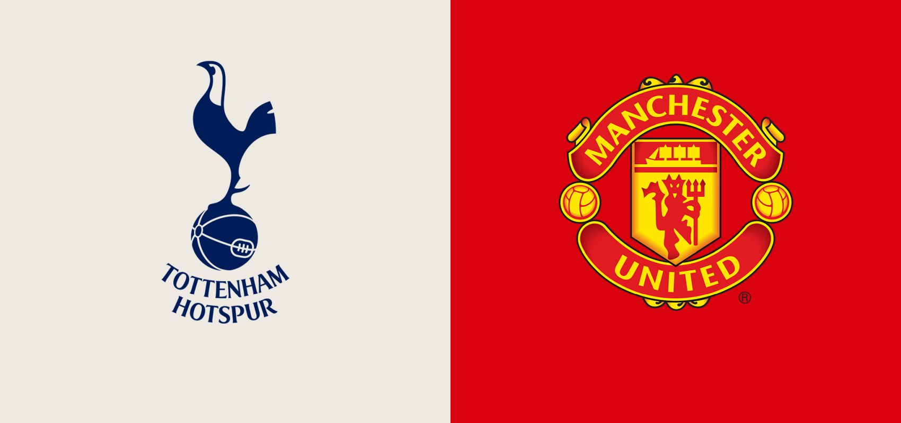

AktualnościZapowiedź: Tottenham Hotspur vs Manchester United – 33. kolejka Premier League
Może Manchester United nie jest w najlepszej formie, ale jeśli spojrzymy na to, co dzieje się w Tottenhamie, to można tylko współczuć kibicom “Kogutów”. Chaos w szatni, zmiana menedżera i porażka 1:6 z Newcastle sprawiają, że zespół z Londynu nie będzie faworytem spotkania z “Czerwonymi Diabłami”. Starcie to może mieć szczególne znaczenie w kontekście walki o czołową czwórkę. Ewentualna porażka podopiecznych Ryana Masona może pogrzebać ich szansę na zakończenie sezonu na miejscu premiowanym grą w Lidze Mistrzów.
